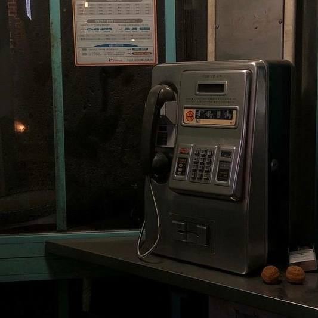
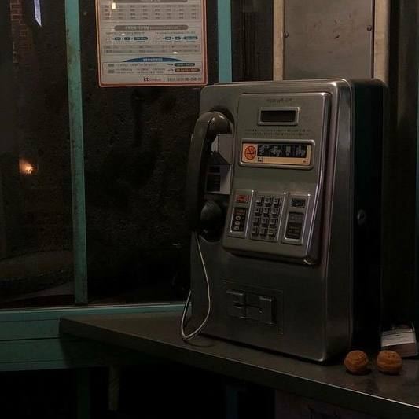

Introduction
PERSONAL INFORMATION
Name: Puteri Maisarah binti Rosli
Address: 55, Jalan Kiai Khusairi KS3, Taman Aneka Baru, 41000 Klang, Selangor
Phone: (+60)182293307
Date of birth: 23 July 2000
EDUCATION
- 2022 - Present: Diploma in Information Management at Universiti Teknologi MARA (UiTM) Rembau, Negeri Sembilan
- 2018 - 2020: Sijil Pelancongan dan Pengembaraan at Kolej Komuniti Tangga Batu, Melaka
- 2013 - 2017: Sijil Pelajaran Malaysia at Sekolah Menengah Kebangsaan (P) Methodist Klang, Selangor
INTERNSHIPS
- Feb 2024 - Mar 2024: Intern at Mahadi Redzuan & Co, Klang
- Dec 2019 - Jan 2020: Food and Beverages at Klana Beach Resort Port Dickson, Negeri Sembilan
- Jan 2020 - Mar 2020: Front Office at Klana Beach Resort Port Dickson, Negeri Sembilan
ACHIEVEMENTS
- Dean's List Award in Universiti Teknologi MARA (UiTM), Rembau
Awarded during Semester 1 (March 2022 - August 2022) and Semester 4 (March 2024 - August 2024) of Diploma in Information Management - Dean's List Award in Kolej Komuniti Tangga Batu, Melaka
Awarded during Semester 1 (June 2018 - November 2018), Semester 2 (December 2018 - May 2019), and Semester 3 (June 2019 - November 2019) of Sijil Pelancongan dan Pengembaraan